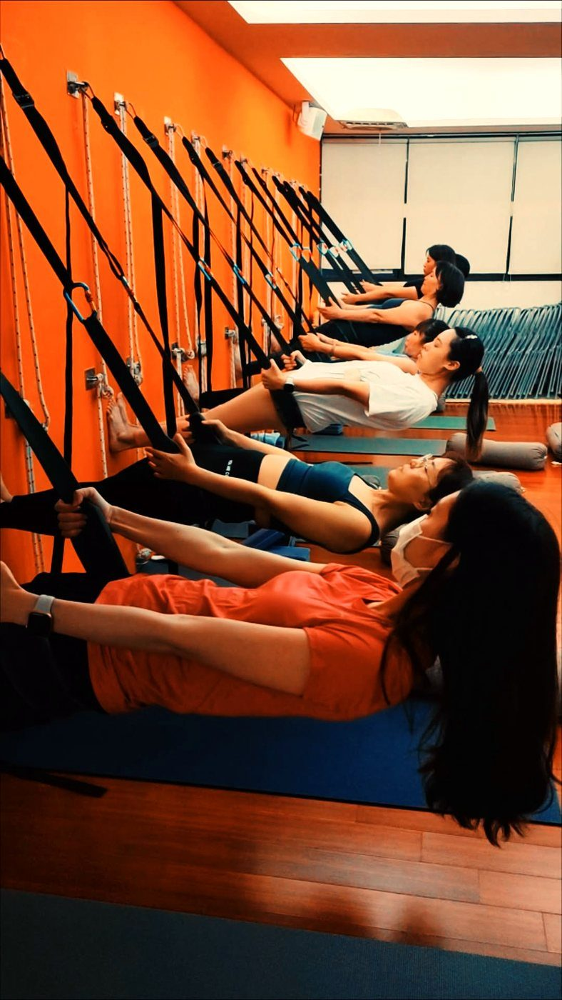

在辦公室就能做的 3 個肩頸放鬆，不用換衣服
下午三點，肩膀不知不覺聳到快貼近耳朵，脖子後面又硬又痠。你也知道該起來動一動，可是會議一場接一場，走不開、更不可能換衣服做伸展。其實不用那麼大費周章——坐著、站著，穿著襯衫，就能幫肩頸鬆一口氣。
為什麼坐一坐，肩膀就自己聳起來
盯著螢幕、雙手往前打字的時候，胸口的胸大肌、胸小肌會慢慢縮短，把肩膀往前、往上拉；後背該幫忙穩住肩胛的下斜方肌、菱形肌卻越來越懶得出力。於是撐場面的工作就落到上斜方肌、提肩胛肌身上，它們整天硬撐，當然又緊又痠。
所以肩頸放鬆的重點，不是把痠的地方按更用力，而是提醒身體「往回走」——把縮起來的前面打開，把睡著的後面叫醒一點點。下面 3 個動作就是照這個邏輯設計的：
- 頸側伸展：坐正，一手輕輕扶著對側頭頂，把頭慢慢帶向肩膀那一邊，感覺脖子到肩膀（上斜方肌）被拉開，另一邊肩膀放鬆往下沉。
- 胸口開展：雙手在背後十指互扣、手臂打直，胸口輕輕往前推、往上開，把整天縮著的胸口打開。
- 肩胛後收下壓：想像有人從背後把你的兩片肩胛骨往後、往下夾，肩膀遠離耳朵，喚醒下斜方肌與菱形肌。
怎麼做才有效
每個動作停 5 個深呼吸，慢慢吐氣的時候再多放鬆一點。重點不是拉到極限，是「常常提醒」。
不用換衣服，也能練到「留得住」
這 3 個動作好處是隨時能做，但它們比較像「踩剎車」，把當下的緊繃降下來。若你想讓改變真的留得住，還需要在有支撐的狀態下，慢慢把後背的力量練回來。這也是壁繩派得上用場的地方：繩子給你穩定的依靠，讓你安全地把胸口打開、同時練到平常叫不動的上背，就算身體很硬也不勉強。想多了解可以先看壁繩到底是什麼、第一次上課會做什麼。

現在就能做的一個小練習
先從「頸側伸展」開始就好。坐正、肩膀放鬆，右手輕輕扶著頭的左側，吸一口氣，吐氣時把頭慢慢帶向右肩，停留 5 個深呼吸，換邊再做一次。全程不用出很多力，感覺被拉開就夠了。它不會一次就把緊繃解決，但只要你每坐 40 分鐘就想起來做一次，身體會慢慢記得「原來肩膀本來該在這裡」。
本文為體態與姿勢的一般衛教與練習分享，非醫療診斷或治療。若有疼痛、舊傷或特殊病史，請先諮詢合格醫療專業人員。